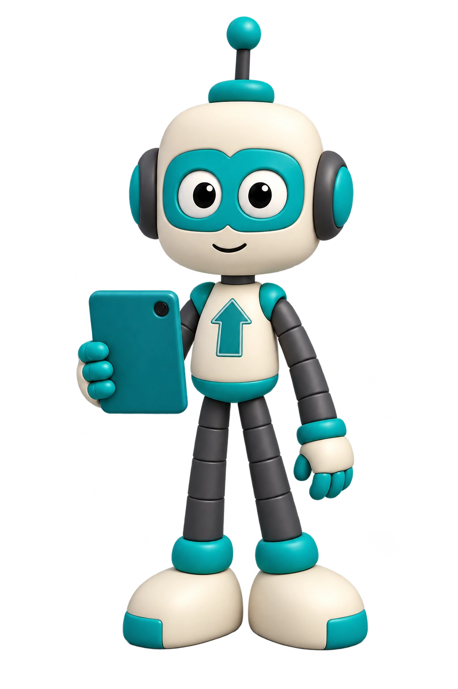
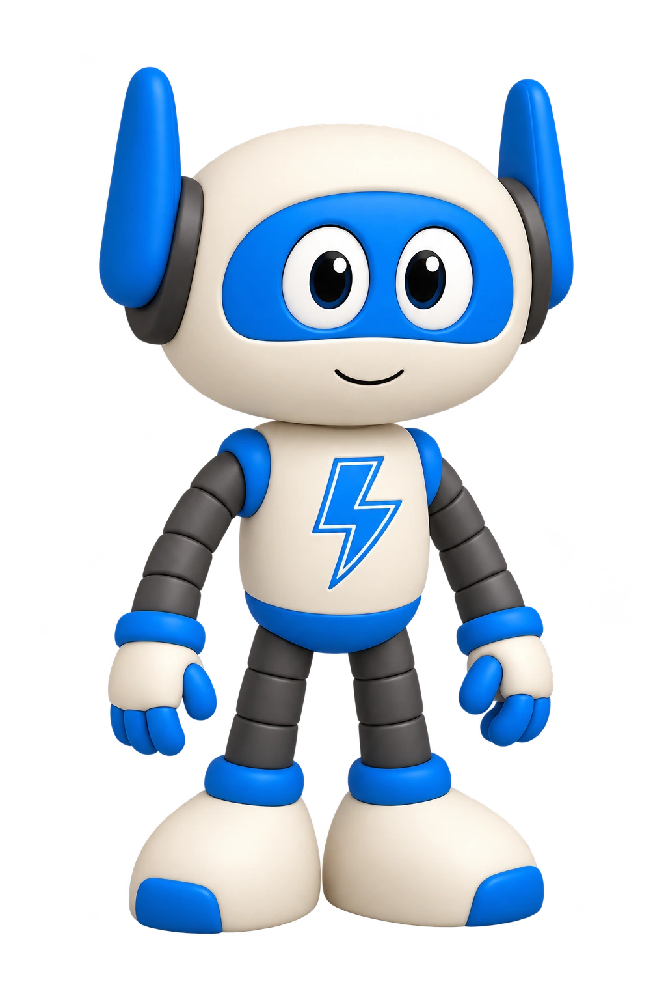
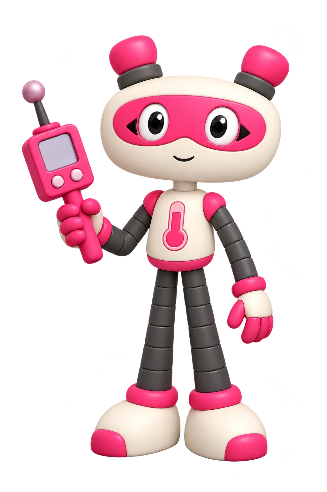
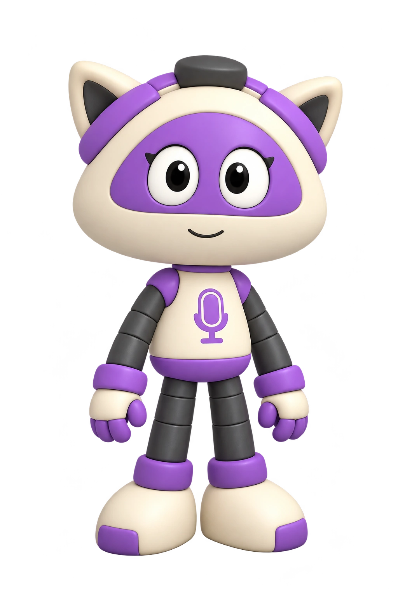
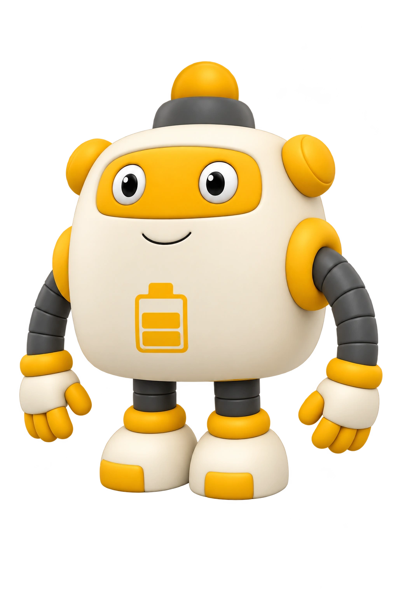

Большая аудитория маленьких приключений
Анимационная вселенная для всей семьи
Маленькие герои.
Большие возможности.
Объясняем детям, как работает их тело.
Превращаем знания в приключения.
Создаём полезные проекты вместе с брендами.

Для брендов, образовательных проектов и СМИЛистайте, знакомьтесь
01 Знакомьтесь, НАНОБОТЫ
Открываем вселенную,
которая всегда с нами.
Внутри учёного-изобретателя Петра живёт команда наноботов. Они охраняют его здоровье, а каждый симптом превращают в увлекательное приключение.
Комедия, открытия и понятная наука помогают детям и родителям вместе узнавать, как устроен человеческий организм.
- Для кого
- Дети 6 – 14 лет
и их родители - Формат
- 2D- и 3D-анимация
и короткие ролики - В основе
- Научная и медицинская
проверка контента
 Приключения внутри тебя
Смотреть в VK Видео
Приключения внутри тебя
Смотреть в VK Видео
02 НАНОБОТЫ в цифрах
Истории, которые
смотрят миллионы.
Данные команды проекта
Суммарно на площадках проекта
Просмотры и подписчики — совокупные показатели проекта, по данным команды. Просмотры не равны числу уникальных зрителей.
Кто нас смотрит
У каждой площадки — своя аудитория.
Выберите канал, чтобы увидеть её портрет.
Состав аудитории
YouTube55,3%женщины
Женщины55,3%
Мужчины44,6%
Возраст аудитории площадки25–44лет
Взрослая аудитория, которой интересны польза и экспертность.
По аналитике каналаГеография
КазахстанРоссияУкраинаКыргызстанБеларусь
Страны, указанные в аналитике выбранной площадки.
Источник: анализ аудитории по соцсетям, предоставленный командой проекта. Период среза в документе не указан. Доли сохранены как в источнике; сумма может отличаться от 100%. Возраст аккаунтов на площадках и целевая аудитория мультсериала — разные показатели.
03 Смотрите, подписывайтесь, делитесь
Одна вселенная.
Восемь каналов.
Все официальные площадки НАНОБОТОВ.
Выберите, где вам удобнее смотреть.
04 Герои и визуальный мир
Пять характеров.
Одна команда.
Крошечные роботы, созданные Петром,
исследуют и защищают его организм.
Нажмите на героя, чтобы узнать его историю.
01 /

Вектор
Терапевт · Диагност
02 /

Эндо
Хирург
03 /

Микра
Биолог · Биохимик
04 /

Люкси
Репортёр · Лучевая диагностика
05 /

Омни
Поддержка · Логистика
У каждого — своя специальность. Их общая сила — дружба, взаимопомощь и доверие.
05 Вместе с вашим брендом
Есть задача.
Найдём формат.
От первого знакомства с продуктом
до совместной коллекции с героями.
Бренд внутри истории
Станьте частью
приключения.
Нативные упоминания, продакт-плейсмент и брендированные спецвыпуски. Находим естественную роль бренда внутри сюжета и образовательной темы.
Нативная интеграцияСпецвыпускПродакт-плейсмент
Берём на себя
СрокиОт одной недели
СтоимостьРассчитываем под задачу
Объём работ, бюджет и показатели согласуем до запуска.
06 Как начинается сотрудничество
От вашей идеи
до общей истории.
Знакомимся
Вы рассказываете о бренде, аудитории и задаче.
Придумываем
Предлагаем концепцию и формат. Согласуем сроки, бюджет и показатели.
Создаём
Готовим контент и проверяем научную и медицинскую фактуру.
Запускаем
Публикуем проект или передаём материалы. Подводим итоги по согласованным метрикам.
Партнёрство начинается с разговора